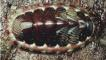
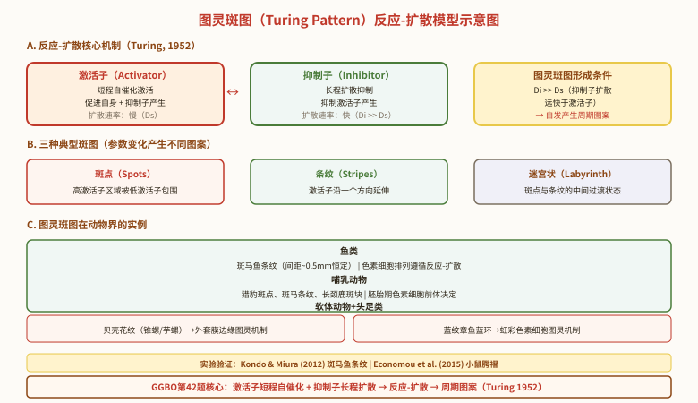

身体柔软 · 真体腔 · 5大特征
一、软体动物概述：第二大门类
软体动物门（Mollusca）是动物界第二大门，已知约 13 万种，仅次于节肢动物（约 120 万种）。从软体演化角度被认为由环节动物演化而来（同具真体腔、链式神经、担轮幼虫），但分节特征退化、身体柔软不分节。
主要特征：
- 真体腔，但体腔退化，仅残留围心腔、生殖腔、排泄腔等；真体腔为循环系统的内腔所填充。
- 后肾管（metanephridium），由中胚层和外胚层共同形成，与环节动物同源。
- 身体两侧对称或不对称（腹足类扭转后不对称）。
- 三胚层，新出现循环系统和呼吸系统。
- 发育经担轮幼虫 → 面盘幼虫（瓣鳃类），淡水河蚌还经历钩介幼虫。

二、软体动物的"5 大特征"：分类的形态学基础
软体动物身体划分为 头、足、内脏团、外套膜 4 部分，加 外套腔 为 5 大特征（贝壳是外套膜的衍生物）：
- 头部：位于身体前端，感官集中。发达程度因纲而异：头足纲（乌贼、章鱼）头部最发达；腹足纲（田螺）次之；瓣鳃纲（河蚌）头部退化（穴居/固着）。
- 足部：肌肉质的运动器官，位于腹部。形态各异：块状（石鳖）、叶状（蜗牛）、斧状（河蚌）、特化为腕（头足类）。
- 内脏团：容纳消化、生殖等内脏器官的团块，常隆起于背部。
- 外套膜（mantle）：软体动物特有，是体壁背侧皮肤褶皱延伸形成的膜性结构，包被整个内脏团，分泌贝壳。陆生种类的外套膜血管密集成"肺室"，进行气体交换。
- 外套腔（mantle cavity）：外套膜与内脏团之间的空腔，是呼吸器官、生殖孔、排泄孔的开孔处。
外套膜 → 贝壳：
- 数目：1 个（腹足类）、2 个（瓣鳃类）、8 个（多板类石鳖）、内壳（头足类）、无（无板类）。
- 三层结构：角质层（壳皮，薄，边缘分泌）→ 棱柱层（壳层，厚，霰石 CaCO₃）→ 珍珠层（文石 CaCO₃ + 壳角蛋白，整个外套膜分泌，可不断加厚）。
三、贝壳数量辨析：各纲对比
7 大纲分类 · 代表动物
四、软体动物的 7 大纲
| 纲 | 代表动物 | 贝壳 | 足/运动 | 头部 | 鳃 | 分布 |
|---|---|---|---|---|---|---|
| 单板纲 Monoplacophora | 新蝶贝 | 1 帽状壳 | 周缘肌肉爬行 | 退化 | 5–6 对 | 深海（活化石） |
| 无板纲 Aplacophora | 龙女簪 | 无 | 蠕虫状 | 有 | 无/有 | 深海 |
| 多板纲 Polyplacophora | 石鳖 | 8 块背板 | 块状足 | 退化 | 多对（栉鳃） | 海滨 |
| 腹足纲 Gastropoda | 田螺、蜗牛、蛞蝓 | 1 螺旋壳（或无） | 块状足/叶状足 | 发达 | 栉鳃/肺 | 海/淡/陆 |
| 掘足纲 Scaphopoda | 角贝 | 管状（象牙状） | 柱状足 | 不明显 | 无 | 海底 |
| 瓣鳃纲 Bivalvia | 河蚌、牡蛎、蛤、扇贝 | 2 块 | 斧足 | 退化 | 瓣鳃 | 水生 |
| 头足纲 Cephalopoda | 乌贼、章鱼、鹦鹉螺 | 内壳/外壳/无 | 腕+漏斗 | 最发达 | 羽鳃 | 海产 |
五、代表动物：河蚌（无齿蚌）的解剖
河蚌（Anodonta）属瓣鳃纲，是典型的水生底栖动物，与"穴居不活泼"的生活方式相适应：
- 身体左右侧扁，分背腹，能分前后背腹。两侧各 1 块贝壳。
- 头部退化（穴居无需复杂感官），感官不发达。
- 足呈斧状（斧足纲的由来），可伸入泥沙中挖掘。
- 两外套膜在后缘不完全闭合，形成入水管（腹方）和出水管（背方）。
肌肉系统：闭壳肌（前 1 后 1）、缩足肌（前 1 后 1）、伸足肌（前 1）。
呼吸系统：4 个瓣状鳃（瓣鳃纲），位于外套腔内。
瓣鳃的功能：呼吸 + 辅助取食 + 育儿囊（外鳃腔育卵）。
神经系统：3 对神经节——脑神经节、足神经节、侧神经节（脑与侧神经节合并）。
雌雄异体，但外观上区分：雄蚌鳃薄、鳃丝稀；雌蚌鳃厚、鳃丝密。
六、头足纲：软体动物中最高等者
头足纲是软体动物中最高等的一类，也是高等无脊椎动物的代表，约 700 现存种（化石种 1 万以上）。主要特征：
- 头部发达，两侧各 1 发达的眼（结构与脊椎动物眼相似——趋同进化经典案例）。
- 足特化为腕（10 个，鹦鹉螺 90 多个）和漏斗——快速运动器官。
- 外套膜肌肉发达，左右愈合成囊状（外套腔=胴部）。
- 神经系统中枢被软骨包围（与脊椎动物的"脑颅"功能同源——趋同进化）。
- 闭管式循环（软体动物中唯一，与快速游泳相适应）。
- 雌雄异体，直接发育（无担轮幼虫期），全海产。
- 具墨囊（特化的直肠盲囊），分泌墨汁御敌。
- 具色素细胞（chromatophore）—— 由肌纤维控制，可瞬间变色。
乌贼 Sepia（十腕目）：内壳 1 块（即中药"海螵蛸"，疏松石灰质，减轻比重利于游泳），10 腕（4 对短腕+1 对长触腕+雄左第 5 腕茎化）。
章鱼 Octopus（八腕目）：8 腕，无内壳。
鹦鹉螺 Nautilus（四鳃亚纲）：外壳多室，是"活化石"。

七、软体动物的发育与生活史
发育阶段：
钩介幼虫（glochidium）：河蚌特有，具钩状结构，可附着在鱼鳃/鳍上，营短期寄生生活 → 变态后落入水底转为底栖。这一阶段是河蚌扩散的主要方式。
腹足类发育：受精卵→担轮幼虫→面盘幼虫→幼螺→成螺。
头足类发育：直接发育，无担轮幼虫和面盘幼虫（卵大、富卵黄、产卵量少）。
关键概念辨析与联赛考点
深度 1 · 软体动物的循环系统
软体动物循环系统的特点：开管式循环（血窦型），血液不始终在血管内流动。
心脏结构：1 心室 + 2 心耳（瓣鳃类）或 1 心室 + 1 心耳（腹足类），位于围心腔内。
特殊：头足纲（乌贼、章鱼）是闭管式循环——这是软体动物中唯一进化出闭管式循环的类群，与其快速游泳相适应（高压循环可快速供应氧和营养）。
深度 2 · 软体动物的神经系统演化
| 动物 | 神经节对数 | 其他特征 |
|---|---|---|
| 河蚌（瓣鳃） | 3 对 | 脑、侧合并 + 足 + 脏 |
| 田螺（腹足） | 4 对 | 侧脏神经索扭成"8"字 |
| 乌贼（头足） | 高度集中（脑） | 脑被软骨包围，眼结构复杂 |
深度 3 · 腹足纲的"扭转"：不对称的来源
腹足类的"内脏团不对称"是动物界独特现象，源于胚胎期的扭转（torsion）：
扭转过程：面盘幼虫期，内脏团相对外套腔和头足发生 180° 旋转，致原本位于后方的外套腔转至前方，与原肛-鳃的相对位置发生颠倒。
扭转的演化意义：
- 使鳃位于头部前方，水流从前向后流过鳃腔（防御性回缩时鳃仍可工作）
- 但带来"扭转应激"（torsion stress）：排泄物、肛腔废物经过头部，污染头部 → 后又发生"反扭转"（detorsion），如后鳃类（海蛞蝓）和肺螺类（蛞蝓）。
腹足类的"螺旋"（coiling）则是另一独立过程：内脏团沿垂直轴螺旋生长，形成 1 个不对称的螺旋壳（1 个壳是腹足类与瓣鳃类（2 块）的关键区别）。
深度 4 · 软体动物与人类的关系
经济意义：
- 食用：牡蛎、扇贝（干贝）、鲍鱼、乌贼、章鱼、蛤、蚶、蛏、河蚌等。
- 药用：海螵蛸（乌贼内壳，止血）、石决明（鲍鱼贝壳）、珍珠（钙质+氨基酸）、牡蛎（安神）。
- 工艺：珍珠（天然/养殖）、贝雕、螺钿。
- 工业：贝壳制石灰、纽扣（早期）。
- 危害：钉螺（血吸虫中间宿主）、福寿螺（广州管圆线虫中间宿主）、船蛆（破坏木质船体和海堤）、牡蛎附着（堵塞管道）。
图灵斑图模型（Turing Pattern）在动物花纹形成中的应用（GGBO第42题竞赛前沿）
图灵斑图（Turing Pattern）的基本原理：
- Alan Turing于1952年在《形态发生的化学基础》一文中提出：两种扩散速率不同的化学物质（形态发生素，morphogens）通过反应-扩散（reaction-diffusion）机制，可以自发形成稳定的空间周期性图案（斑点、条纹等）。
- 核心机制：①激活子（activator）——短程自催化激活，促进自身和抑制子的产生；②抑制子（inhibitor）——长程扩散抑制，抑制激活子的产生。当抑制子的扩散速率远大于激活子时，系统自发形成图灵斑图。
- 斑图类型：斑点（spots）——高激活子区域被低激活子区域包围；条纹（stripes）——激活子沿一个方向延伸；迷宫状（labyrinth）——中间状态。
图灵斑图在动物界的实例：
- 鱼类：斑马鱼（Danio rerio）的条纹形成——色素细胞（黑色素细胞和黄色素细胞）的排列遵循图灵反应-扩散机制。斑马鱼条纹之间的间距（约0.5 mm）在不同个体间保持恒定，符合图灵斑图的特征。
- 哺乳动物：猎豹斑点、斑马条纹、长颈鹿的斑块——均由胚胎发育时期色素细胞前体的图灵型反应-扩散机制决定。
- 软体动物：贝壳上的色素花纹（如锥螺、芋螺的复杂花纹）也被认为是由外套膜边缘的图灵斑图机制控制的。
- 头足类：蓝纹章鱼（Hapalochlaena）的蓝色环纹——当章鱼受到威胁时，虹彩色素细胞（iridophore）快速展示蓝环作为警告信号。蓝环的形成和分布模式可能涉及图灵斑图机制。
图灵斑图的实验验证：
- 2012年，Kondo和Miura通过实验证明斑马鱼条纹的形成确实遵循图灵机制。2015年，Economou等人证明小鼠口腔黏膜上的腭褶（palatal rugae）也遵循图灵反应-扩散机制。

蓝纹章鱼（Hapalochlaena）的性食同类行为（GGBO第43题竞赛前沿）
蓝纹章鱼（Hapalochlaena，蓝环章鱼属）的基本特征：
- 蓝纹章鱼/蓝环章鱼是一类小型但毒性极强的章鱼，属头足纲八腕目。体表具有标志性的蓝色环纹，受惊扰时蓝环会变得更加鲜艳，是警戒色（aposematic coloration）的经典例子。
- 毒性：蓝环章鱼唾液腺含有河豚毒素（tetrodotoxin, TTX），这是一种神经毒素，阻断电压门控钠通道，导致呼吸麻痹。TTX也存在于河豚、某些蝾螈和箭毒蛙中，是趋同进化的例子。
性食同类（Sexual Cannibalism）：
- 性食同类是指交配过程中或交配前后，一方（通常是雌性）捕食并吃掉配偶（通常是雄性）的行为。在蓝纹章鱼中，雌性个体在交配后可能攻击并吃掉雄性个体。
- 进化意义：①雌性获得营养资源用于产卵和孵化，提高后代存活率；②雄性以牺牲自己为代价，使自己的基因通过雌性产下的后代得以延续；③雄性可能通过被吃掉，降低雌性再交配的概率（精子竞争策略）。
- 其他经典例子：螳螂（雌性在交配时或交配后吃掉雄性）、蜘蛛（黑寡妇蜘蛛、红背蜘蛛等）。
本节知识回顾（联赛要求）
- 软体动物门 = 身体柔软、不分节、5 大特征（头/足/内脏团/外套膜/外套腔）+ 贝壳。是动物界第二大门（13 万种）。
- 外套膜 分泌贝壳；贝壳三层：角质层+棱柱层（边缘分泌）+ 珍珠层（整个外套膜分泌，可不断加厚）。
- 7 大纲：单板、无板、多板（8 块）、掘足、腹足、瓣鳃（2 块+斧足）、头足（脑最高等+闭管式）。
- 河蚌：斧足 + 2 块贝壳 + 入水/出水管 + 4 瓣鳃（呼吸+摄食+育儿）+ 开管式循环 + 3 对神经节。
- 头足纲（乌贼）= 软体最高等：脑被软骨保护 + 闭管式循环 + 眼与脊椎动物趋同 + 10 腕+漏斗 + 墨囊 + 色素细胞。
- 发育：担轮幼虫 → 面盘幼虫（瓣鳃类），河蚌特有钩介幼虫（寄生于鱼）；头足类直接发育。
- 海螵蛸 = 乌贼的内壳（贝壳的退化）。
高中衔接与课标差距
人教版新教材在选择性必修 2 提及软体动物（如河蚌、蜗牛）的生态学意义，但详细分类、各纲特征、生殖发育等均不要求。
联赛层面超出课标之处：
- 外套膜的"5 大特征"结构（头/足/内脏团/外套膜/外套腔）和分类依据。
- 贝壳三层结构的分泌来源（边缘 vs 整个外套膜）。
- 7 大纲分类及代表动物。
- 头足纲作为无脊椎动物"最聪明"的代表：脑软骨、闭管式循环、眼的趋同进化。
- 钩介幼虫（河蚌特有）→ 鱼鳃寄生 → 变态。
- 腹足类的扭转（torsion）现象及演化意义。
- 河蚌 3 对神经节 vs 田螺 4 对（含口球神经节）的精确辨析。